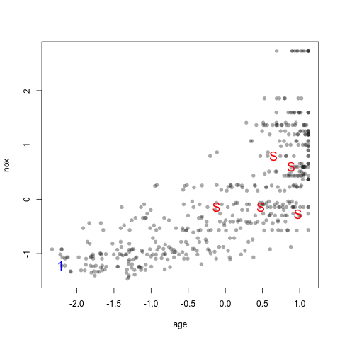

Simple Splitting Based on the Outcome
The function createDataPartition can be used to create balanced splits of the data. If the y argument to this function is a factor, the random sampling occurs within each class and should preserve the overall class distribution of the data. For example, to create a single 80\20% split of the iris data:
Resample1
[1,] 1
[2,] 2
[3,] 4
[4,] 5
[5,] 6
[6,] 8
The list = FALSE avoids returns the data as a list. This function also has an argument, times, that can create multiple splits at once; the data indices are returned in a list of integer vectors. Similarly, createResample can be used to make simple bootstrap samples and createFolds can be used to generate balanced cross–validation groupings from a set of data.
Splitting Based on the Predictors
Also, the function maxDissim can be used to create sub–samples using a maximum dissimilarity approach (Willett, 1999). Suppose there is a data set A with m samples and a larger data set B with n samples. We may want to create a sub–sample from B that is diverse when compared to A. To do this, for each sample in B, the function calculates the m dissimilarities between each point in A. The most dissimilar point in B is added to A and the process continues. There are many methods in R to calculate dissimilarity. caret uses the proxy package. See the manual for that package for a list of available measures. Also, there are many ways to calculate which sample is “most dissimilar”. The argument obj can be used to specify any function that returns a scalar measure. caret includes two functions, minDiss and sumDiss, that can be used to maximize the minimum and total dissimilarities, respectfully.
As an example, the figure below shows a scatter plot of two chemical descriptors for the Cox2 data. Using an initial random sample of 5 compounds, we can select 20 more compounds from the data so that the new compounds are most dissimilar from the initial 5 that were specified. The panels in the figure show the results using several combinations of distance metrics and scoring functions. For these data, the distance measure has less of an impact than the scoring method for determining which compounds are most dissimilar.
[1] 71 139 491 296 355 241
The visualization below shows the data set, the starting samples (show as "S") and the order in which the other 20 samples are added.

(click image for larger gif)
{kind=link}